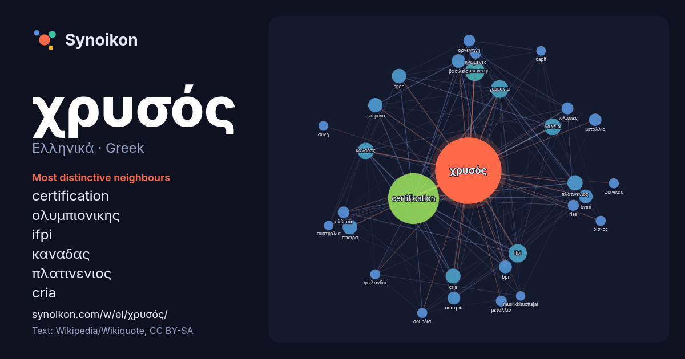

Ελληνικά · Greek · word of the day list
χρυσός
“gold” · The words found around it in 1083 instances from Greek Wikipedia, Wikiquote.

Most distinctive neighbours
- certification 317×
- ολυμπιονικης 62×
- ifpi 56×
- καναδας 45×
- πλατινενιος 40×
- cria 38×
- snep 37×
- bvmi 33×
- σφαιρα 32×
- γερμανια 31×
- bpi 29×
- ηνωμενο 28×
- γαλλια 27×
- αυστρια 24×
- αργεντινη 23×
- riaa 22×
- ελβετια 22×
- μεταλλιο 20×
- μεταλλια 19×
- βασιλειο 18×
× = how many times more often than in general Greek Wikipedia text.
Most frequent neighbours
- certification 454
- ολυμπιονικης 67
- ifpi 58
- γερμανια 54
- γαλλια 49
- καναδας 47
- πλατινενιος 41
- cria 39
- σφαιρα 38
- snep 37
- ηνωμενο 36
- bvmi 33
- φορες 33
- βασιλειο 32
- bpi 29
- αυστρια 28
- μεταλλιο 27
- πολιτειες 25
- αργεντινη 24
- ελβετια 24
In context
- μέταλλο. Ο χρυσός και ο χαλκός είναι τα δυο μοναδικά «έγχρωμα μέταλλα». Οι παραπάνω αναφερόμενες ιδιότητες παραμένουν ίδιες και όταν ο χρυσός εκτεθεί στον Wikipedia snippets · Χρυσός
- πράσινος χρυσός που χρησιμοποιείται σήμερα σε μερικά κοσμήματα είναι κράμα που περιέχει χρυσό, ασήμι, κάδμιο και ψευδάργυρο. Ο λευκός χρυσός περιέχει χρυσό, νικέλιο Wikipedia snippets · Άργυρος
- Ως Ζωγραφική της ολλανδικής Χρυσής Εποχής χαρακτηρίζεται η ζωγραφική των δημιουργών της ολλανδικής Χρυσής Εποχής, περιόδου της ολλανδικής ιστορίας που Wikipedia snippets · Ζωγραφική της ολλανδικής Χρυσής Εποχής
- τριχλωριούχου χρυσού (AuCl3). Ο άνυδρος τριχλωριούχος χρυσός αρχίζει ν' αποσυντίθεται περίπου στους 160 °C προς AuCl : AuCl3 → AuCl + Cl2 Ο χλωριούχος χρυσός είναι Wikipedia snippets · Χλωριούχος χρυσός
- 39887\ldots .} Η χρυσή τομή αναφέρεται επίσης και ως χρυσός λόγος ή χρυσός κανόνας. Άλλα ονόματα είναι χρυσή μετριότητα και Θεϊκή αναλογία ενώ στον Ευκλείδη Wikipedia snippets · Χρυσή τομή
- χημικό στοιχείο γνωστό και ως πλατίνα. Για το κράμα χρυσού στα κοσμήματα, δείτε: χρωματισμένος χρυσός. Το χημικό στοιχείο λευκόχρυσος, κοινώς γνωστό ως Wikipedia snippets · Λευκόχρυσος
- Ο χρυσός (Au) έχει ένα σταθερό ισότοπο, 197Au, και 18 ραδιοϊσότοπα με σταθερότερο το 195Au που έχει χρόνο ημιζωής 186 μέρες. Οι τιμές που σημειώνονται Wikipedia snippets · Ισότοπα του χρυσού
- Για άλλες χρήσεις, δείτε: Φοίνικας. Ο Χρυσός Φοίνικας (γαλλικά: Palme d'or) είναι το υψηλότερο βραβείο που απονέμεται σε ταινίες που διαγωνίζονται στο Wikipedia snippets · Χρυσός Φοίνικας
More Greek words
Precomputed on 2026-10-09 with default settings (±5 words, medium corpus). The interactive map can refresh it with live data.